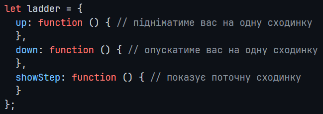

8.1. Ladder
Create a ladder object that allows you to climb up and down.
Now, if we need to make several consecutive calls, we can do it like this:
ladder.up();
ladder.up();
ladder.down();
ladder.showStep(); // 1
Modify the code of the up, down, and showStep methods so that their calls can be chained, for example:
ladder.up().up().down().showStep(); // 1